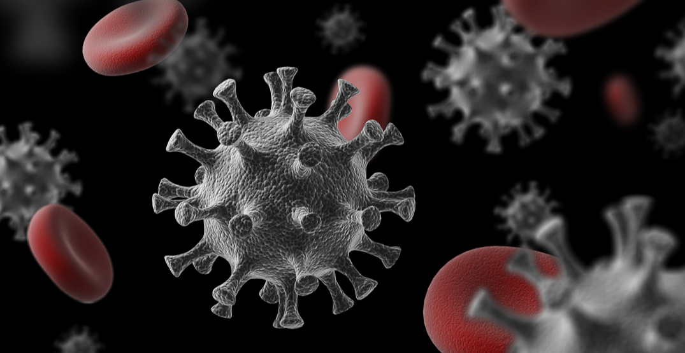
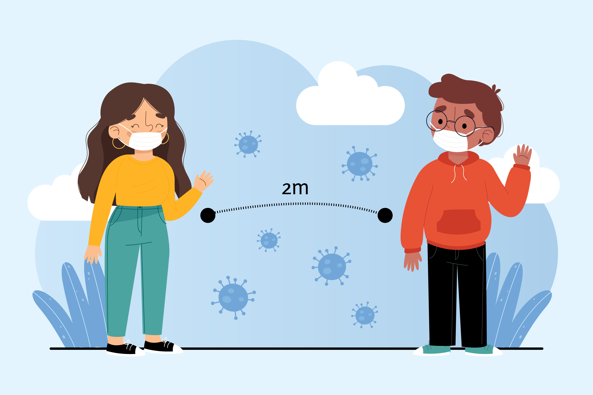
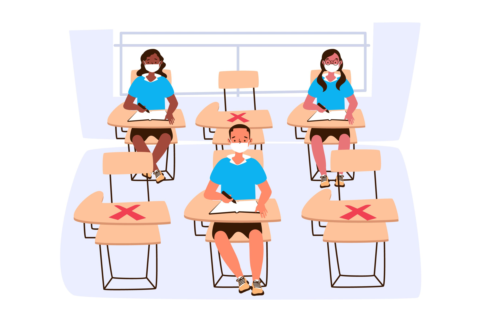
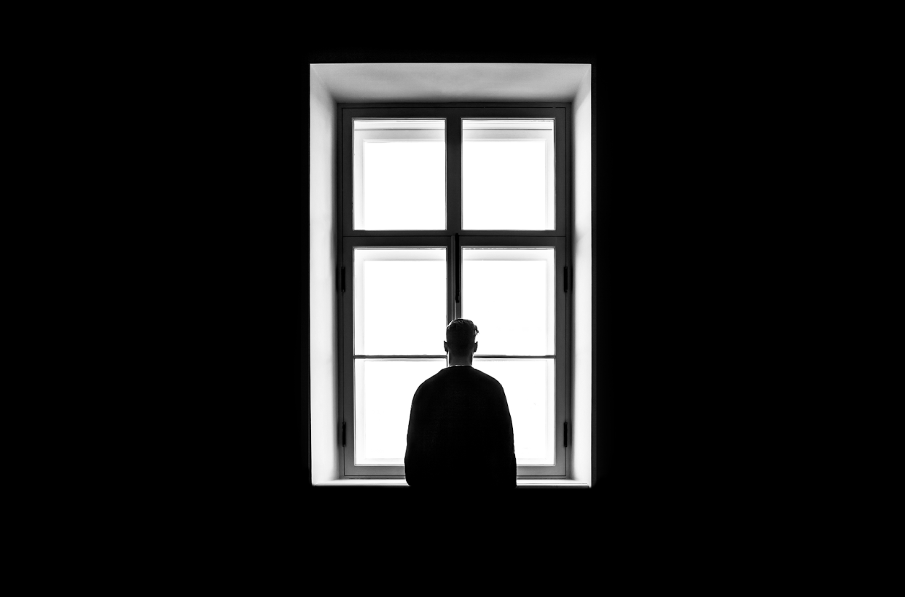

COVID’s effect on relationships

To trust someone isn’t always easy. We trust the people we love. We trust our first responders helping others in this pandemic.The COVID-19 outbreak is profoundly affecting our social relationships.There were small moderation effects of relationship coping and conflict during the pandemic, revealing that satisfaction increased and maladaptive attributions decreased in couples with more positive functioning, and satisfaction decreased and maladaptive attributions increased in couples with lower functioning.

Major external stressors such as natural disasters or pandemics require individuals to immediately mobilize a response and tax the community-wide social-support resources that individuals typically turn to in times of stress. Accordingly, individuals rely heavily on the people closest to them for support in navigating these crises.However, reliance on intimate partners has been further heightened during the COVID-19 pandemic. Individuals across the world were isolated at home with their families for weeks: Adults worked from home or were laid off, children were out of school, and physical contact with people outside of one’s household was discouraged or banned, raising questions about the impact of the pandemic on intimate relationships.

According to Telli, Yamamoto and Altun (2020), education is the sector most
affected by COVID-19 after the health sector. It is evident that the pandemic has affected the education life of a
large learning population in a very short time. As a matter of fact, the number of students whose educational
activities were restricted was around 300 million in March 2020 and the number reached 1.6 billion in April
2020. Figure 1 shows that COVID-19 had a great effect on education and training activities in a short time. Due
to the rapid spread, many countries around the world have had to interrupt educational activities or develop
different alternatives in a very short time. UNESCO (2020) data shows that as of April, 92% of the students in
the world have been affected by their education and training life. While the number of countries that closed
schools in March was six, this number increased to 195 a month later.

Some people may experience multiple losses during a disaster or large-scale emergency event. Because of the COVID-19 pandemic, you might be unable to be with a loved one when they die, or unable to mourn someone’s death in-person with friends and family. Other types of loss include unemployment, or not making enough money, loss or reduction in support services, and other changes in your lifestyle. These losses can happen at the same time, which can complicate or prolong grief and delay a person’s ability to adapt, heal, and recover.
Take Care Of Your Mental Health
You may experience increased stress during this pandemic. Fear and anxiety can be overwhelming and cause strong emotions.